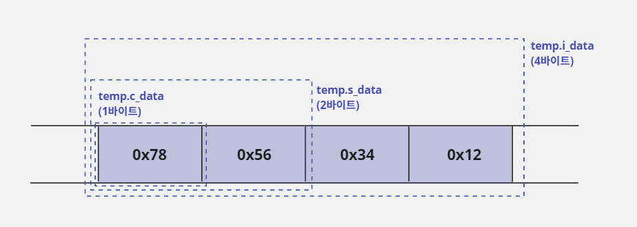
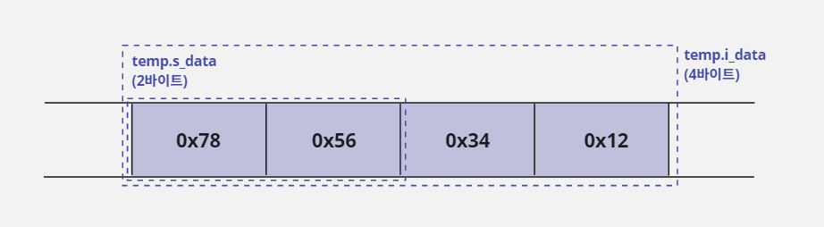
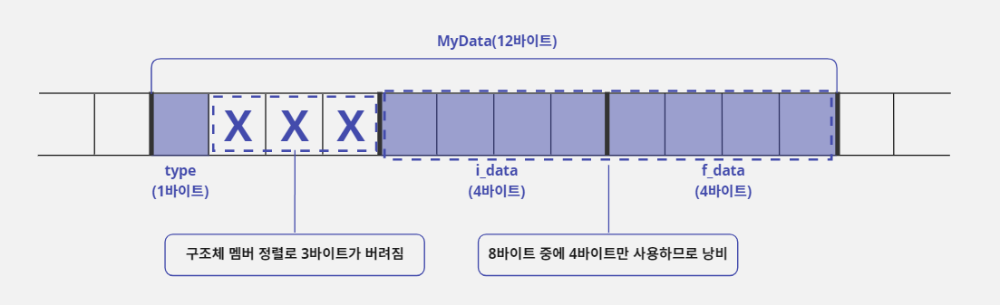
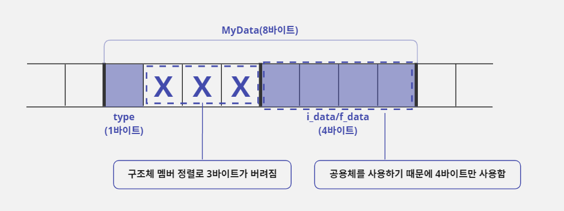
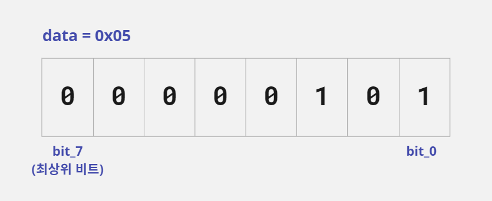
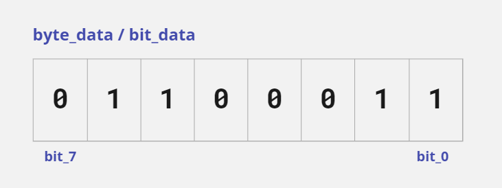
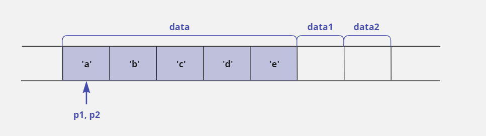
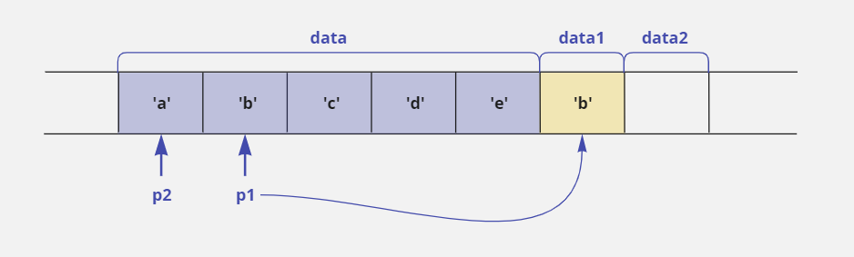
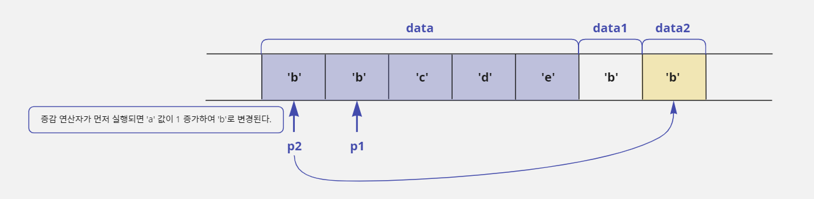

주니어 프로그래머 딱지 떼는 일곱 가지 팁!
Tip 1. 공용체를 적재적소에 활용하면 메모리를 절약할 수 있다
구조체 문법과 비슷한 공용체
- 사용자 정의 자료형을 만드는 구조체와 문법 구조가 비슷한 공용체(union) 문법이 있다.
- 구조체에서
struct키워드를 적는 위치에 공용체는union이라고 적는다. - 그 외 공용체의 문법은 구조체의 문법과 거의 비슷하다.
- 다음은 공용체 문법과
typedef를 사용해서Convert Data라는 새로운 자료형을 만드는 예제이다.
typedef union ConvertData {
char c_data; // 1바이트
short int s_data; // 2바이트
int i_data; // 3바이트
} CD;
- 공용체도 구조체와 마찬가지로 새로운 자료형을 만들거나 그 자료형으로 변수를 선언하려면 항상
union키워드를 적어주어야 한다. - 위 예제에서는
typedef문법을 함께 사용해서CD라는 자료형을 추가로 만들었다. - 따라서 다음과 같이
CD를 사용하면union키워드를 사용하지 않고도 간단하게 변수를 선언할 수 있다.
CD temp; // union ConvertData temp; 와 같음
공용체의 요소들은 할당된 메모리를 공유한다
- 이렇게 구조체 문법과 비슷한 공용체 문법이 있는 이유는 무엇일까?
- 구조체로 만든 자료형의 크기는 구조체를 구성하는 요소들의 크기를 모두 더한 것과 같다.
- 하지만 공용체로 만든 자료형의 크기는 공용체를 구성하는 요소들 중에서 가장 큰 크기와 같다.
- 따라서 이전에 선언한
ConvertData공용체는i_data요소가 4바이트로 가장 크기 때문에CD로 선언한temp변수의 크기는 4바이트가 된다. - 공용체 내부에 선언한 나머지 요소
c_data와s_data는 메모리를 할당 받지 않았으니 사용할 수 없는 것인가? Nope. - 공용체라는 이름이 말해 주듯이 공용체를 구성하는 각 요소들은 서로 같은 메모리를 공유하는 형태로 되어 있다.
- 즉
ConvertData공용체의i_data요소는 4바이트 전체를 사용하고,s_data요소는 4바이트에서 첫 2바이트를 사용하며,c_data요소는 처음 1바이트만을 사용하는 개념이다. - 그래서 다음과 같이 제일 큰
i_data요소에 값을 대입하면s_data와c_data에도 영향을 미친다.
temp.i_data = 0x12345678;

- 공용체는 각 요소들이 같은 메모리를 공유하기 때문에 위의 그림에서처럼
temp.i_data에 값을 대입했을 때temp.s_data에는0x5678,temp.c_data에는0x78을 대입한 것과 같은 효과가 있다. - 그래서 이런 공용체의 기능을 잘 이용하면 4바이트 크기를 갖는 정수 값에서 2바이트나 1바이트의 값을 추출할 수 있다.
- 예를 들어 4바이트 크기의 값을 입력 받아 앞에서 2바이트 크기만 사용하고 싶다면 다음과 같이
temp.i_data로 값을 입력 받고temp.s_data로 사용하면 되는 것이다.
CD temp;
short int s;
temp.i_data = 0x12345678; // 4바이트 공간에 정수 값을 대입함
s = temp.s_data; // 변수 s에 0x5678이 저장됨

공용체는 메모리 절약의 끝판왕
- 공용체는 메모리를 절약하는 용도로 더 많이 사용한다.
- 아래에
MyData라는 구조체를 선언했다. - 구조체의 요소 중
type요소의 값이0이면i_data변수에 정수 값을 저장하고,type요소의 값이1이면f_data에 실수 값을 저장한다고 가정해보자. - 그리고
i_data와f_data가 동시에 사용되는 경우는 없다고 가정하자.
struct MyData {
char type;
int i_data; // type 요소 값이 0이면 사용함
float f_data; // type 요소 값이 1이면 사용함
};
MyData구조체로 변수를 선언하면type요소의 값이 무엇인지에 따라i_data또는f_data중에 하나만 사용되기 때문에 항상 4바이트를 낭비하게 된다.- 왜냐하면
type요소의 값이0이면f_data가 선언된 메모리는 사용되지 않을 것이고,type요소의 값이1이면i_data가 선언된 메모리가 사용되지 않기 때문이다.

- 위 상황처럼 구조체의 각 요소가 함께 사용되지 않고 서로 반대되는 경우에만 사용될 때, 두 요소가 메모리를 공유한다면 공간을 낭비하지 않을 것이다.
- 따라서 다음과 같이 공용체 문법을 사용해서 새로운 자료형을 만들고, 그 자료형으로
MyData구조체에 요소를 추가하면 위에서 발생한 메모리 낭비 문제를 해결할 수 있다.
// i_data와 f_data가 4바이트 메모리를 공유하는 공용체 자료형을 정의함
union SharedType {
int i_data; // 정수 값을 저장할 변수
float f_data; // 실수 값을 저장할 변수
};
struct MyData {
char type;
union SharedType data;
};
void main() {
struct MyData a, b;
a.type = 0; // a 구조체의 type 요소에 0을 저장함
a.data.i_data = 100;
b.type = 1; // b 구조체의 type 요소에 1을 저장함
b.data.f_data = 3.14f;
}
type요소의 값이0일 때는data.i_data요소를 사용해서 정수를 저장하고,type요소의 값이1일 때는data.f_data요소를 사용해서 실수를 저장하면 된다.- 이렇게 하면 앞에서 구조체를 사용했던 것과 같은 기능을 할 것이다.
- 그리고
SharedType자료형이 공용체이기 때문에 결과적으로 동시에 사용하지 않는다는 조건만 만족한다면 몇 개의 변수를 사용하든지 상관없이 공용체로 해당 변수들을 묶어서 메모리를 절약할 수 있다.

Tip 2. 비트 단위 연산이 복잡하다면? 구조체와 공용체를 쓰자
구조체 문법으로 비트 단위 분리하기
- 변수에 입력된 정보를 비트 단위로 값을 확인하거나 변경하고 싶은 경우에는 비트 연산자를 사용하면 된다.
- C 언어는 구조체 문법에서 비트 단위로 데이터를 사용하는 기능을 추가로 제공하고 있다.
- 아래와 같이 구조체를 선언하면 새로운 자료형
BitType이 1바이트 크기로 만들어진다.
// 비트 단위 정보를 다룰 수 있도록 구조체를 선언함
struct BitType {
unsigned char bit_0 : 1;
unsigned char bit_1 : 1;
unsigned char bit_2 : 1;
unsigned char bit_3 : 1;
unsigned char bit_4 : 1;
unsigned char bit_5 : 1;
unsigned char bit_6 : 1;
unsigned char bit_7 : 1;
};
- 각 요소(
bit_0~bit_7)의 오른쪽에: 1이라고 적은 것은 비트 크기를 의미한다. - 예를 들어
unsigned char bit_0 : 1;이라고 적으면bit_0은 1비트 값을 사용한다는 뜻이다. - 따라서
BitType구조체는bit_0부터bit_7까지 1비트 값을 총 8개 정의했기 때문에 크기가 1바이트(8비트)가 된다. - 다음과 같이
BitType으로data변수를 선언하면data변수는 1바이트 크기로 메모리가 할당된다. - 그리고 구조체의 요소에 비트 값을 대입하면
data변수에는 값0x05가 저장된다. - 따라서 비트 연산자를 사용하는 것보다는 좀 더 편하게 비트 값을 사용할 수 있다.
struct BitType data;
data.bit_0 = 1;
data.bit_1 = 0;
data.bit_2 = 1;
data.bit_3 = 0;
data.bit_4 = 0;
data.bit_5 = 0;
data.bit_6 = 0;
data.bit_7 = 0;

구조체 비트 분리 기능을 사용한 변수는 다른 일반 변수와 값을 주고받기 어렵다
data변수에 입력된 값을 다음처럼unsigned char형으로 선언한temp변수에 대입하려고 하면 오류가 발생한다.
unsigned char temp;
temp = data; // 오류 발생: data는 BitType 구조체로 만든 변수임
temp도 1바이트이고data변수도 1바이트이기 때문에data값을temp에 대입하면 문제가 없을 것이라 생각할 수도 있지만 구조체 변수는data.bit_0과 같이.(요소 지정) 연산자와 요소(bit_0)를 함께 사용해야만 대입 연산을 할 수 있다.- 예외적으로 같은 구조체로 선언한 변수 간에는 변수 이름만으로도 복사가 된다.
- 위의 예제는 형 변환을 사용해도 오류를 해결할 수 없다.
- 왜냐하면 이 문제는 단순히 데이터 크기의 차이가 원인이 아니라 구조체의 비트 분리 문법을 사용해서 데이터 형식이 달라져버려서 발생한 것이기 때문이다.
- 예를 들어
int형과float형의 경우에 데이터 크기는 같지만 데이터를 구성하는 형식이 다르기 때문에float값을int에 대입하면 값이 제대로 대입되지 않는 것과 비슷한 상황인 것이다.
unsigned char temp;
temp = (unsigned char) data; // 오류 발생: 데이터 형식이 달라서 형 변환에 실패함
- 따라서 다음과 같이 메모리를 강제로 복사하는
memcpy함수를 사용해 문제를 해결할 수 있다.
unsigned char temp;
// data 변수의 시작 주소에서 temp 변수의 시작 주소로 1바이트 크기만큼 메모리를 복사함
memcpy(&temp, &data, 1);
공용체를 사용해서 좀 더 편하게 비트 단위 분리하기
- 다음과 같이 공용체를 선언하면
BitData자료형의 크기는 1바이트가 되고bit_data요소와byte_data요소는 1바이트 크기의 메모리를 공유하게 된다.
union BitData { // 1바이트 크기의 자료형
struct BitType bit_data; // 1바이트
unsigned char byte_data; // 1바이트
};
- 따라서 다음과 같이
BitData자료형으로temp변수를 선언하고temp변수의byte_data요소에 값0x63을 대입하면, 메모리를 공유하는temp변수의bit_data요소에도 비트 단위로 값을 대입한 것과 같다.
union BitData = temp;
temp.byte_data = 0x63;

/* 구조체의 비트 분리 기능을 사용하여 변수의 비트 값 출력하기 */
#include <stdio.h>
struct BitType { // 구조체를 비트 단위의 정보를 다룰 수 있도록 선언함
unsigned char bit_0: 1;
unsigned char bit_1: 1;
unsigned char bit_2: 1;
unsigned char bit_3: 1;
unsigned char bit_4: 1;
unsigned char bit_5: 1;
unsigned char bit_6: 1;
unsigned char bit_7: 1; // 최상위 비트
};
union BitData { // 1바이트 크기의 자료형
struct BitType bit_data;
unsigned char byte_data;
};
void main() {
union BitData temp;
temp.byte_data = 0x63;
printf("byte_data : %x\n", temp.byte_data);
printf("bit_data : %d%d%d%d %d%d%d%d\n", temp.bit_data.bit_7, temp.bit_data.bit_6, temp.bit_data.bit_5,
temp.bit_data.bit_4, temp.bit_data.bit_3, temp.bit_data.bit_2, temp.bit_data.bit_1, temp.bit_data.bit_0);
}
byte_data : 63
bit_data : 0110 0011
- 위 예제를 반대로 구성하여
bit_data에 비트 값을 넣고byte_data로 확인하는 것도 가능하다. - 연산 능력은 비트 연산자가 더 좋다.
- 개인적으로 비트 연산자를 사용하는 것을 더 추천한다.
Tip 3. #define과 typedef를 헷갈리지 말자
- 전처리기인
#define문법과 사용자 정의 자료형을 만드는typedef문법은 다음처럼 A를 B로 치환하는 형식을 가지고 있다.
typedef unsigned short int * PSI; // PSI라는 새로운 자료형을 정의함
#define PSI unsigned short int * // 전처리기라서 끝에 ;이 필요 없음
typedef를 사용하면unsigned short int *자료형을PSI자료형으로 새롭게 정의할 수 있다.- 그리고
#define문법을 사용하고 소스 코드에PSI라고 쓰면 컴파일할 때PSI가unsigned short int *로 치환된다. - 따라서 다음과 같이 사용하면 두 문법은 아주 비슷해 보인다.
typedef unsigned short int *PSI;
PSI p_temp; // unsigned short int *p_temp; 와 같음
#define PSI unsigned short int *
PSI p_test; // unsigned short int *p_test; 와 같음
#define을 사용해 자료형을 치환하면 문제가 생긴다
- 단순하게 사용했을 때는 두 문법이 비슷하게 보이지만 내용을 조금 더 추가해 보면 두 문법이 다르다는 것을 알 수 있다.
typedef unsigned short int *PSI;
PSI p_temp, p1; // unsigned short int *p_temp, unsigned short int *p1; 을 의미함
#define PSI unsigned short int *
PSI p_test, p2; // unsigned short int *p_test, unsigned short int p2; 를 의미함
typedef문법을 사용하면 자료형을 새로 만든 것이기 때문에PSI가unsigned short int *를 의미한다.- 따라서
PSI p_temp, p1;이라고 사용하면unsigned short int *p_temp, *p1;을 의미한다. - 즉
p_temp, p1변수 모두unsigned short int *형식의 포인터로 선언된다. - 하지만
#define을 사용하면p_test만unsigned short int *로 바뀐다. - 따라서
PSI p_test, p2;라고 사용하면unsigned short int *p_test, p2;를 의미한다. - 즉
p_test는unsigned short int *형식의 포인터로 선언되지만p2는unsigned short int형 일반 변수로 선언된다. - 자료형을 치환하기 위해
#define을 사용하는 것은 편법일 뿐이다. - 따라서 자료형을 치환할 때는 원칙을 지켜서
typedef문법을 사용하자.
typedef 문법으로 상수 치환은 불가능하다
- 반대의 경우도 마찬가지이다.
- 두 문법이 비슷하다고
typedef문법을 자료형 치환이 아닌 단순 치환 형태로 사용하면 안된다.
typedef 100 MAX_COUNT; // 오류 발생: 상수는 자료형이 아님
typedef문법은typedef키워드를 제거했을 때 변수를 선언하는 형식을 유지해야 한다.
Tip 4. 열거형: 상수를 좀 더 효과적으로 치환하는 방법
#define BLACK 0
#define WHITE 1
#define RED 2
#define GREEN 3
#define BLUE 4
#define YELLOW 5
- 이렇게 나열해서 적으면 불편할 것이다.
- 상수를 연속적으로 치환하는 경우에는 열거형(enum) 상수를 사용해서 선언하자.
enum MY_COLOR { BLACK, WHITE, RED, GREEN, BLUE, YELLOW };
- 이렇게 열거형 상수를 사용하면서 상수 값을 따로 적지 않으면 처음 위치에 있는
BLACK값이 0으로 치환되고 그 뒤에 있는 치환문(WHITE,RED, ⋯)들은 차례대로 1씩 증가한다. - 이렇게 선언한 열거형 상수는
#define을 선언한 것과 같은 형태로 사용할 수 있다.
int my_data = GREEN; // my_data 에 0을 대입함
Tip 5. 조건부 컴파일: 자기가 만든 코드를 테스트하는 것이 프로그래머의 기본이다
- 프로그램을 만들다 보면 소스 파일의 여러 곳에 자신의 코드를 체크하기 위한 테스트 코드를 추가하게 된다.
int ProcessData(int data) {
int result;
if(data < 256) { // 예외 확인을 위한 테스트 코드
result = data * 100;
} else { // 예외 확인을 위한 테스트 코드
printf("Error!!\n");
}
return result;
}
- 테스트 코드를 한 곳에만 사용한 것이 아니고 소스 코드 전체에 여기저기 사용했다면 코드 정리가 어려울 것이다.
전처리기를 사용해서 조건에 따라 필요한 문장만 골라 컴파일하기
- C 언어는 주어진 조건에 따라 컴파일할 수 있도록 다양한 전처리기를 제공한다.
#ifdef 전처리기와 #endif 전처리기
ifdef는 if define의 줄임 표현이고endif는 end of ifdef의 줄임 표현이다.- 아래이 두 코드는 컴파일된 결과가 같다.
int ProcessData(int data) {
int result;
if(data < 256) { // 예외 확인을 위한 테스트 코드
result = data * 100;
} else { // 예외 확인을 위한 테스트 코드
printf("Error!!\n");
}
return result;
}
#define MY_DEBUG
int ProcessData(int data) {
int result;
#ifdef MY_DEBUG // 이 구간은 MY_DEBUG가
if(data < 256) // #define문으로 선언되어 있어야
#endif // 컴파일된다.
result = data * 100;
#ifdef MY_DEBUG // 이 구간은 MY_DEBUG가
else // #define문으로 선언되어 있어야
printf("Error!!\n"); // 컴파일된다.
#endif //
return result;
}
- 결론적으로 소스 코드에서
#define MY_DEBUG치환문만 제거하면 소스에 있는 모든#ifdef MY_DEBUG~#endif가 주석으로 처리되는 효과가 생겨서 테스트 코드를 관리하기 편해진다. - 이렇게 테스트 코드를 관리하는 방법을 '조건부 컴파일'이라고 부른다.
#ifdef와 반대인 #ifndef 전처리기
#ifdef와 반대되는 의미로#ifndef가 제공되는데 이 전처리기는 if not define을 의미한다.- 다음 예시에서
MY_DEBUG가#define되지 않았기 때문에#ifndef MY_DEBUG에서#endif까지 컴파일에 포함된다.
#ifndef MY_DEBUG // if not define의 뜻
// 사용하고 싶은 코드(생략)
#endif
헤더 파일 중복 참조를 막는 방법
- 위에서 이야기한 조건부 컴파일 전처리기들은 실무에서 헤더 파일을 선언할 때 더 많이 사용한다.
#include를 중복 사용해서 발생하는 오류는#ifndef~#endif문을 사용하여 해결할 수 있다.
test.h#ifndef _TEST_H_ // _TEST_H_ 가 정의되어 있지 않다면 이후 코드를 컴파일함 #define _TEST_H_ // _TEST_H_ 를 정의함 struct MyData { int a; int b; }; #endif
- 위와 같이 헤더 파일을 구성하면
test.h헤더 파일이 처음#include될 때는_TEST_H_가 정의되어 있지 않아서#ifndef를 처리한다. - 그리고
#define _TEST_H_코드를 수행해서_TEST_H_가 정의된다. - 따라서
test.h헤더 파일이 다시#include되더라도_TEST_H_가 이미 정이되어 있기 때문에#ifndef에서#endif까지 컴파일에서 제외된다.
Tip 6. 포인터와 증감 연산자를 잘 써야 명령문이 간단해진다
- 포인터를 사용하다 보면 비슷하게 생긴 명령문이 완전히 다르게 동작해서 오류가 발생하는 경우가 많다.
- 그 중에서도 포인터와 증감 연산자를 함께 사용하면 연산자 우선순위와 증감 연산자의 전위·후위 연산 특성 때문에 실수를 많이 할 수밖에 없습니다.
- 하지만 포인터와 증감 연산자를 잘 활용하면 명령문을 간단한 형태로 만들 수 있기 때문에 실무에 있는 프로그래머들이 즐겨 사용한다.
- 아래의 표현들을 정확하게 알아두자!
*p++와 *++p의 의미
*p++는 자신이 가리키는 주소에 저장된 값을 사용한 후 자신의 주소를 증가시킨다는 의미이고*++p는 자신의 주소를 증가시킨 후에 그 주소에 가서 값을 사용한다는 뜻이다.
char data[5] = {'a', 'b', 'c', 'd', 'e'};
char *p1 = data, *p2 = data, data1, data2;
// *p1이 먼저 처리되어 data1에는 'a'값이 저장된다.
// 저장 후에 p1++가 처리되어 주소가 증가하면 p1은 'b'의 위치로 이동하지만 data1에는 영향이 없다.
data1 = *p1++;
// p2의 주소가 먼저 증가되어 p2는 'b'이 위치로 이동한다.
// 이동후에 *p2가 처리되어 data2에는 'b'값이 저장된다.
data2 = *++p2;
- 작업 후에 포인터 변수
p1과p2는 둘 다data배열의 두 번째 요소 주소를 가리킨다. - 하지만 작업 순서 때문에
data1에는 값a가,data2에는 값b가 저장된다.
*++p와 ++*p는 서로 다른 의미
*++p는p가 가지고 있는 주소를 증가시킨 후 그 주소에 저장된 값을 사용한다는 뜻이다.++*p는p가 가지고 있는 주소에 저장된 값을 1만큼 증가시키겠다는 뜻이다.- 따라서
*++p는p의 주소가 변경되고,++*p는p가 가리키는 대상의 값이 변경된다.
char data[5] = {'a', 'b', 'c', 'd', 'e'};
char *p1 = data, *p2 = data, data1, data2;

// ++p1이 먼저 처리되어 p1은 'b'의 위치로 이동한다.
// 이동 후에 *p1이 처리되어 data1에는 값 'b'가 저장된다.
data1 = *++p1;

// p2가 가리키는 주소에 가서 해당 주소에 저장된 값을 1만큼 증가시키고
// 그 값을 data2에 저장한다.
// p2는 주소가 변경되지 않는다.
data2 = ++*p2;

- 결과적으로
data1,data2에는 값b가 똑같이 들어갔지만 처리 과정에 차이가 많이 난다.
Tip 7. 개발 도구의 도움말 웹 페이지를 활용하자
- 문자열을 복사하는 함수, 문자열 길이를 얻는 함수를 프로그래머가 일일이 만들어 사용할 필요가 없다.
- C 언어에서 제공하는
strcpy,strlen같은 런타임 함수를 사용하면 된다.